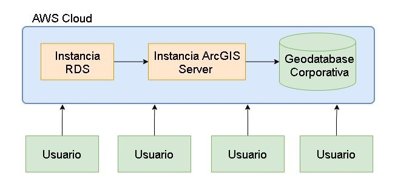

Catastro de Redes para abastecimiento de Hidrocarburos
Propuesta de proyecto - Proceso de selección Ecopetrol
Descripción
Proyecto enfocado en la integración, mantenimiento y actualización de la información para la toma de decisiones a través de catastro de redes; Esto con el fin de tener procesos eficientes para el abastecimiento de hidrocarburos y permitir el seguimiento
a través de la implementación de servicios web geográficos.
Catastro de Redes
es un sistema de registro y archivo que contiene información relacionada con todos los detalles de ubicación y especificaciones técnicas de los elementos de una red y se utiliza como un instrumento para el análisis, evaluación, formulación y desarrollo
de programas para la toma de decisiones.
Etapas
Construcción de Bases de Datos
En esta etapa se construye el modelo de base de datos que
almacenará la documentación recolectada en campo, esta dependerá de
los requerimientos del cliente y de las características de las
redes.
Etapa de Inspección
Levantamiento de información en campo de todo lo correspondiente al
abastecimiento y almacenamiento del producto (medidas, materiales,
tipos de piezas, estado físico) como productos se pueden tener
fotografías, fichas y planos.
Etapa de Edición
Se procede a editar y almacenar la información obtenida de la etapa
anterior en las bases de datos, si esta previamente existía se
realiza una corroboración de información.
Integración de los SIG
Se relaciona la información recolectada y editada a la información
geográfica digital, esto se registra en las Geodatabase Corporativas
de la entidad.
Arquitectura de la solución
Las Geodatabases guardan datos espaciales y no espaciales. ArcGIS da
opciones para incluir una geodatabase corporativa en un servicio de base
de datos de Amazon con su sitio de ArcGIS GIS Server independiente. Esta
se agrega como base de datos administrada al sitio de GIS Server donde
Puede publicar datos desde las fuentes de datos locales y las aplicaciones
de escritorio en su sitio de GIS Server en AWS y ArcGIS copiará los datos
en la base de datos administrada.

Catastro de Redes para abastecimiento de Hidrocarburos
Con el avance de las tecnologías, se ha convertido en una necesidad el uso
de nuevas soluciones para dar alcance a los objetivos principales de cada
organización. En Ecopetrol, el compromiso de generar un bienestar social y
ambiental, sumado a la optimización de procesos y reducción de costos, no
es la excepción y así debemos enfocar nuestros fuerzos en obtener los
mejores resultados día a día.